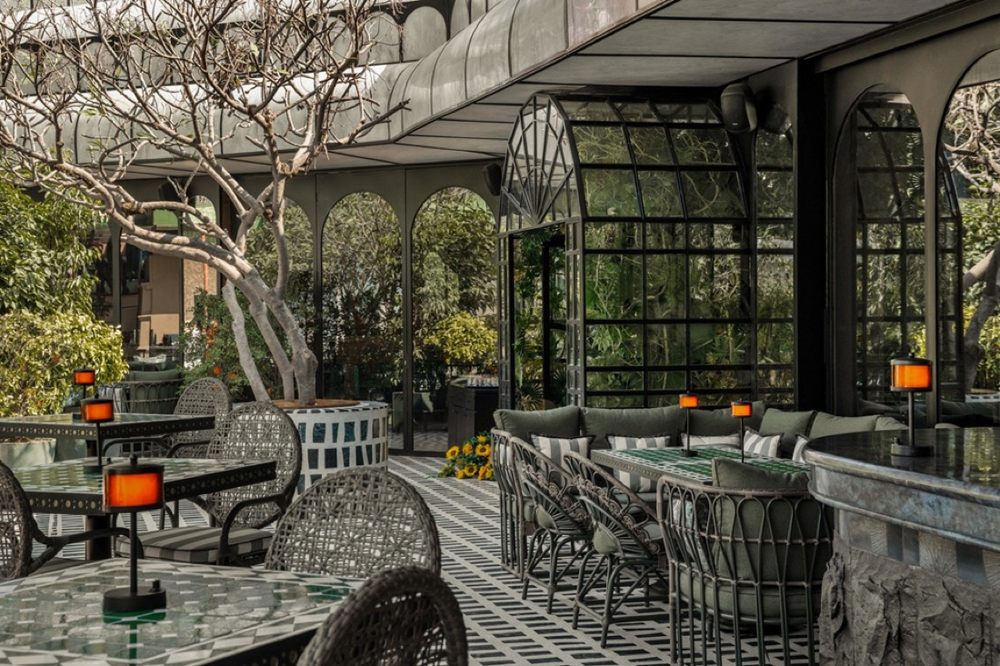

… the bill of six houses sits here, unchanged …
From dining rooms
to dance floors.
Campbell exists across the full spectrum of contemporary hospitality.
Restaurants
Dining experiences built around food, design and conversation.
Bars
Considered cocktails, distinctive spaces and evenings that unfold slowly.
Nightlife
Music-led destinations made for the after-dark.
Patisserie
Handcrafted creations where technique meets imagination.
Private Experiences
Celebrations, launches, dinners and occasions designed around the guest.
What brings every
house together?
Design
Spaces that have a point of view.
Culinary Craft
Food that respects its ingredients and its story.
Hospitality
Service that feels intuitive, personal and effortless.
Culture
Music, art, fashion and people shaping every experience.
Experience
Because a great restaurant is more than what is on the plate.
From Delhi,
outward.

Let's create something
worth talking about.
From private dining and celebrations to brand collaborations, cultural events and media partnerships, Campbell works with brands and people who share a passion for creating memorable experiences.
Six houses.
One hospitality philosophy.
Different names. Different worlds. Different ways of bringing people together.
But behind them all is Campbell India.